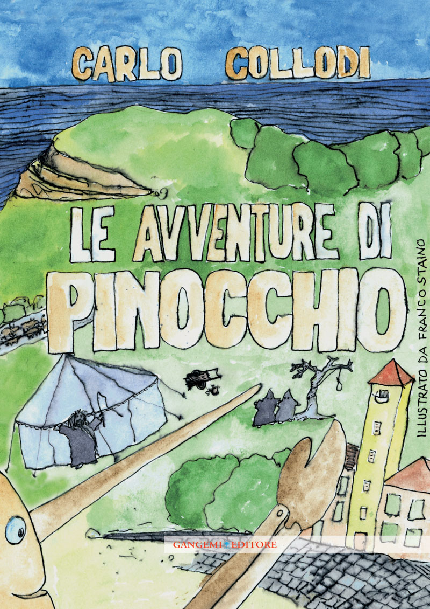

52:33 · 7 OPERE
Il pericolo sociale dell'industria culturale.
Il filo del discorso
Il contributo riprende la nozione di industria culturale a partire da Adorno e Horkheimer e la estende alle istituzioni formative e alla comunicazione politica contemporanea. La domanda centrale riguarda la autonomia: che cosa accade quando una persona riconosce i modelli proposti ma continua ad aderirvi per bisogno di appartenenza o gratificazione? Il relatore legge passi sulla standardizzazione dei prodotti culturali e sulla sostituzione della coscienza con la conformità, distinguendo inizialmente Dialettica dell’illuminismo da un successivo saggio di Adorno. Accosta poi esempi quotidiani, il rapporto fra individuo e collettività, la riflessione di Jean Améry sulla esperienza concentrazionaria e l’immagine pascaliana della canna pensante. Nella conclusione critica anche una opposizione che riproduce sigle, etichette e ricerca di attenzione del sistema che contesta. La scheda conserva questa esigenza di un giudizio sostenuto da ragioni e contenuti. Distingue però gli autori citati dalle applicazioni del relatore: una teoria dei media non prova le intenzioni interiori di una persona, un provvedimento cautelare non determina una regola generale e il valore del pensiero non rende superflue le cure per un disturbo d’ansia. I richiami alla Shoah mantengono la specificità della testimonianza storica, senza trasformare i modi di sopravvivere in una graduatoria morale delle vittime.
I libri nel discorso

Dialettica dell’illuminismo
Copertina: Einaudi, Piccola Biblioteca Einaudi, 2010
Edizione illustrativa dell'opera, con traduzione di Renato Solmi e introduzione di Carlo Galli; non identificata nel video.
Dialettica dell’illuminismo, Horkheimer, Adorno e capitolo sull’industria culturale espliciti.
Passaggio 0:50 ↗ · Fonti e libro ↗
Culture Industry Reconsidered
Copertina della raccolta The Culture Industry che contiene il saggio: Copertina della raccolta The Culture Industry: Selected Essays on Mass Culture, a cura di J. M. Bernstein, Routledge Classics, 2001; prima edizione della raccolta 1991. ISBN 9780415253802. Il catalogo bibliotecario descrive viii,210 pagine; il catalogo attuale dell’editore indica 224 pagine. Non è una copertina autonoma del singolo saggio.
L’indice Routledge conferma Culture Industry Reconsidered. L’ISBN appartiene alla raccolta inglese; non si attribuisce questa edizione al filmato.
Il titolo Industria culturale riconsiderata è pronunciato; altri passaggi del medesimo saggio sono letti già da815secondi.
Passaggio 22:30 ↗ · Fonti e libro ↗
Risposta alla domanda: che cos’è l’Illuminismo?
Identificazione probabile
Copertina della raccolta che comprende il saggio sull’Illuminismo: Firenze University Press · Sette scritti politici liberi · 2011 · a cura di Maria Chiara Pievatolo
Copertina del volume cartaceo FUP che comprende il saggio, riscontrato dal catalogo universitario. L’ISBN appartiene alla raccolta; il filmato non annuncia un’edizione e il titolo del saggio è un’identificazione probabile della citazione.
Autonomia del cittadino e Kant richiamano il saggio sull’Illuminismo, senza titolo esplicito.
Passaggio 13:10 ↗ · Fonti e libro ↗
Bibbia
Copertina: San Paolo, 2014 · Nuova Versione dai Testi Antichi · edizione di riferimento
Il testo biblico è nominato come esempio di lettura da contestualizzare, senza edizione.
Passaggio 10:42 ↗ · Fonti e libro ↗
Intellettuale a Auschwitz
Identificazione probabile
Copertina: Bollati Boringhieri · Varianti · 2011 · traduzione di Enrico Ganni
Immagine autentica dell’opera, controllata visivamente; l’edizione di riferimento non è attribuita al filmato.
Jean Améry, Hans Mayer e riflessione sull’intellettuale nel campo: identificazione probabile del volume, senza titolo pronunciato.
Passaggio 30:13 ↗ · Fonti e libro ↗
Pensieri
Identificazione probabile
Copertina: UTET · a cura di Bruno Nacci · 2021
Copertina autentica dell’edizione di riferimento, non attribuita all’esemplare del video.
La canna pensante richiama i Pensieri di Pascal, senza titolo o autore pronunciati in quel punto.
Passaggio 36:36 ↗ · Fonti e libro ↗
Le avventure di Pinocchio. Storia di un burattino
Identificazione probabile
Copertina: Gangemi · illustrato da Franco Staino, 2009
Immagine autentica dell’opera, controllata visivamente; l’edizione di riferimento non è attribuita al filmato.
Lucignolo, Gatto e Volpe nel finale e paese dei balocchi poco prima: allusione riconoscibile a Pinocchio.
Passaggio 52:14 ↗ · Fonti e libro ↗